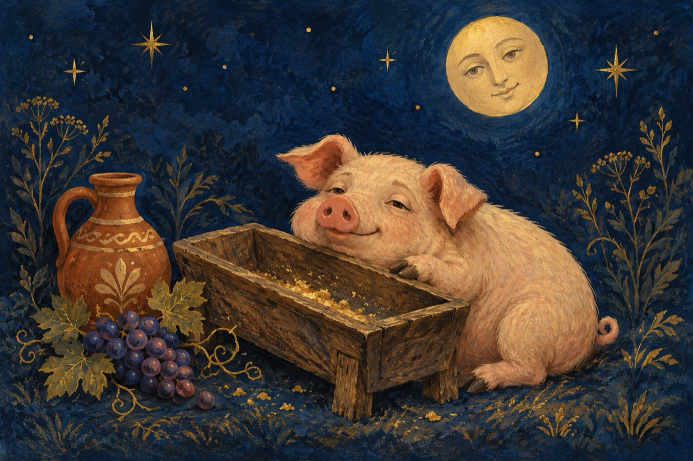

Pentrologie
(pentru ologi, e!)
Pentru ologi e
Ce altceva să fie
De-l întorci cu susu-n jos
Oricum e burtos
Și de-l lași ca să-și revină
Cică n-are nici o vină
Dacă lui mâncarea-i place
N-ai ce-i face!
Du-te măi și fă o cură
Și nu mai băga pe gură
Păi atunci ce-a mai rămas
Vrei ca să mănânc pe nas?
Nu, mănâncă mai puțin,
Nu mai bea atâta vin
Că mâncarea, vinu-ngrașă.
La ce-l porți mereu în fașă?
Pentrologia e știința ce te-nvață
Să fii rațional în viață,
Să ai grijă ce bagi în gură
Să fii om cu a oamenilor măsură!
Nu să stai zilnic pe troc
Să ajungi; scuză-mă ca un porc
Ia totul ca pe un sfat
Și nu mai fii supărat!
Vasile Groza